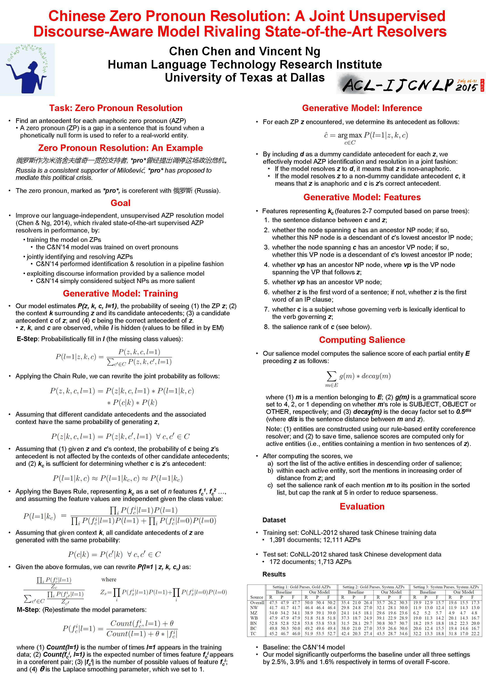

Chinese Zero Pronoun Resolution: An Joint Unsupervised Discourse-Aware Model Rivaling State-of-the-Art Resolvers
Chen Chen and Vincent Ng.
Proceedings of the 53rd Annual Meeting of the Association for Computational Linguistics and the 7th International Joint Conference on Natural Language Processing (Volume 2: Short Papers), pp. 320-326, 2015.
Click here for the
PDF version.
Abstract
We propose an unsupervised probabilistic
model for zero pronoun resolution.
To our knowledge, this is the first such model that
(1) is trained on zero pronouns in an unsupervised manner;
(2) jointly identifies and resolves anaphoric zero pronouns; and
(3) exploits discourse information provided by a salience model.
Experiments demonstrate that our unsupervised model
significantly outperforms
its state-of-the-art unsupervised counterpart when
resolving the Chinese zero pronouns in the OntoNotes corpus.
BibTeX entry
@InProceedings{Chen+Ng:15c,
author = {Chen Chen and Vincent Ng},
title = {Chinese Zero Pronoun Resolution: A Joint Unsupervised Discourse-Aware Model Rivaling State-of-the-Art Resolvers},
booktitle = {Proceedings of the 53rd Annual Meeting of the Association for Computational Linguistics and the 7th International Joint Conference on Natural Language Processing (Volume 2: Short Papers)},
pages = {320--326},
year = 2015}
